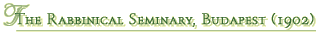
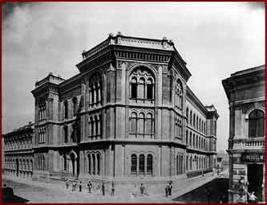

|  | |||
|  | |||
| The emperor, Franz Joseph I (1848–1916), levied a contribution from the Jews for taking part in the Hungarian Revolution and War of Independence. Later he returned the money to raise the Jewish Educational and School Fund. After a long debate in the Jewish community, the Congress decided to establish the Rabbinical Seminary, which became an institution of the Neology and Status quo ante trends. | |||